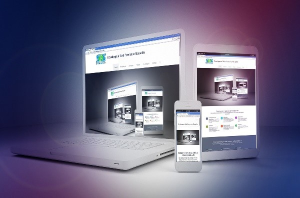

Comment devenir développeur web (orienté mobile) ?
Présentation
Le développeur web mobile est un technicien qui crée des programmes informatiques spécifiquement dédiés à l’environnement mobile. Ses compétences sont : la connaissance en OS (savoir alterner entre Linux, Windows car selon les systèmes les logiciels ne sont pas les mêmes) et les spécifications propres au format mobile (formatage des textes, langage de structuration HTML (HyperText Markup Language).
La création d’une maquette
Définir le besoin de la clientèle en s’appropriant les idées, les envies et de faire en sorte que le système que vous allez établir soit simple et efficace.

La création de cahier des charges
Il faudra s’en tenir à la lettre (les délais et le planning, liste de contraintes techniques, le type de demande sur la partie web, la plateforme (Android, IOS ou Windows), définir les étapes de l’application et sa fonctionnalité, son évolution dans son utilisation et au fur et à mesure d’éventuelles mises à jour permettant de corriger certains bugs).
S'adapter aux nouveautés
Avoir une certaine rigueur, être autonome et de la curiosité permettant une très bonne capacité d’adaptation, de connaître toutes les nouveautés dans le secteur de l’informatique.
La maîtrise des outils informatiques et des logiciels comme Kotlin qui s’utilisent avec JavaScript pour un fonctionnement multi-plateformes. Il permet le développement (serveur ou système).
Quelle sont les formations pour devenir développeur web mobile ?
- LP Développement Web et Mobile (MW)
- LP Développement d’applications Intranet/Internet
- DUT informatique
- LP en systèmes informatiques et logiciels spécialité informatique répartie et mobile.
Combien gagne un développeur web mobile ?
- Le salaire d'un débutant est de 30000 € allant jusqu'à une certaine valeur selon son expertise.